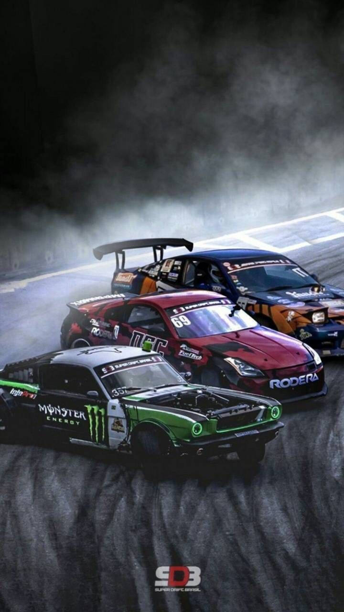
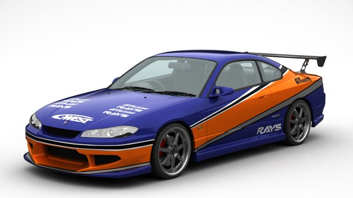
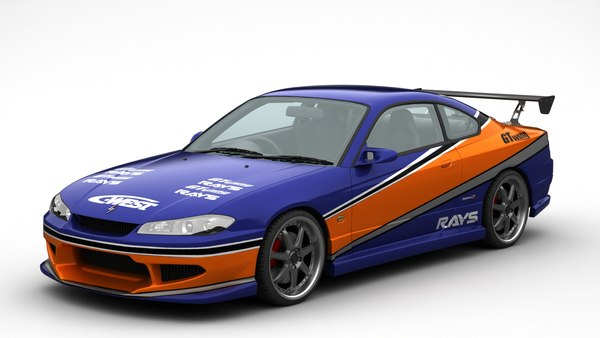
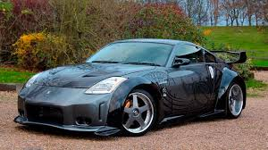
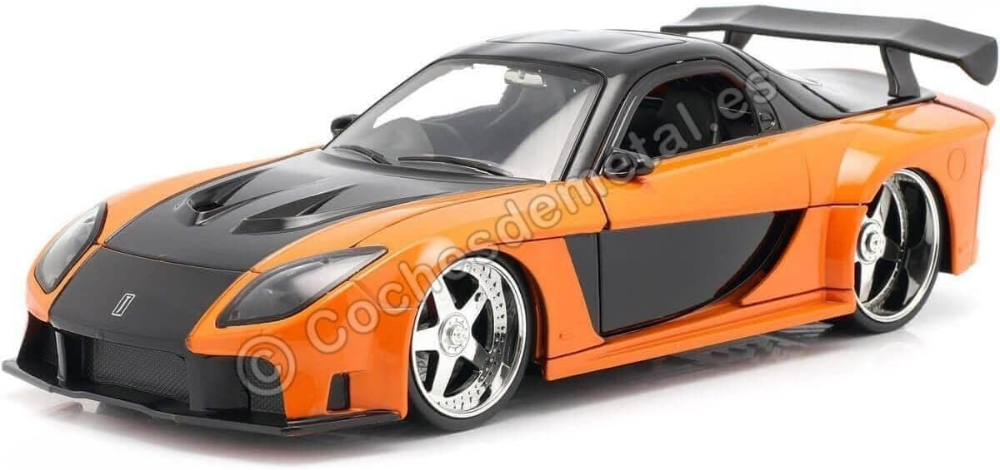
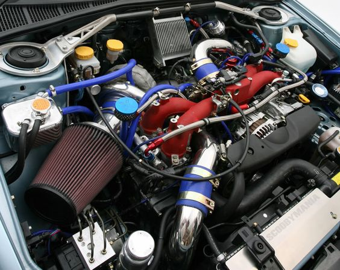

Drifiting

É uma arte de direção de carros que se fundamenta em deslizar nas curvas escapando a traseira do carro, girando o volante de forma que as rodas dianteiras fiquem sempre em direção oposta a curva, utilizando o freio de mão para controlar o nível de derrapagem, fazendo o carro andar de lado.
O drifting moderno começou há 30 anos no “All Japan Touring Car Championship races”. Tendo como criador da técnica o piloto japonês, Kunimitsu Takahashi, em 1970, que ficou famoso batendo seu “apex” (ponto onde o carro está mais próximo da curva) em alta velocidade, deslizando na curva e saindo dela com mais velocidade que o normal.Embora o drift não seja uma "corrida" no formato tradicional, ele é um tipo de competição automotiva muito popular, onde o objetivo principal não é apenas a velocidade, mas a habilidade do piloto em manipular o carro para realizar derrapagens controladas (ou "drifts") ao redor de curvas.Após essa grande façanha ele ganhou inúmeros fãs que deram início ao drifting japonês.
Muito tempo depois da sua criação o drifting chegou ao Brasil, só começou a ganhar destaque com a popularização do tuning e a chegada de jogos e filmes relacionados. O drift se tornou uma paixão para os brasileiros que curtem aventura e alta velocidade, tanto que está previsto para o primeiro semestre de 2007 o I Campeonato Brasileiro de Drifting.
Carros Usados no Drift
Os carros de drift são altamente especializados para facilitar as manobras de derrapagem controlada e garantir que os pilotos possam manter o controle do veículo enquanto deslizam nas curvas a alta velocidade. Esses carros são geralmente baseados em modelos de produção, mas passam por várias modificações para melhorar a performance, estabilidade e controle nas condições de derrapagem. Vamos ver os principais aspectos dos carros usados no drift e as modificações típicas:
Embora praticamente qualquer carro possa ser modificado para drifts, os modelos mais comuns em competições de alto nível são sedãs, cupês e hatchbacks com tração traseira (RWD - Rear Wheel Drive), pois esses são mais fáceis de controlar ao realizar derrapagens. Alguns dos carros mais populares no drift incluem:
Nissan Silvia (S13, S14, S15)

 

Toyota Corolla AE86

Nissan 350Z / 370Z


BMW M3

Ford Mustang (GT ou Shelby)

Mazda RX-7 e RX-8


Modificações Comuns em Carros de Drift

1. Suspensão
Suspensão ajustável
Amortecedores reforçados
2. Motorização
Turboalimentação ou superalimentação
Motorização de alto desempenho
Intercooler e sistemas de resfriamento
3. Transmissão e Diferenciais
Caixa de câmbio sequencial
Diferencial de deslizamento limitado (LSD)
4. Rodas e Pneus
Rodas de aro largo
Pneus especiais para drift
5. Freios
Freio de mão hidráulico
Sistema de freios reforçado
6. Carroceria e Peso
Reforço de carroceria
Redução de peso
7. Sistema de Direção
Direção rápida (angle kit)
Caixa de direção reforçada